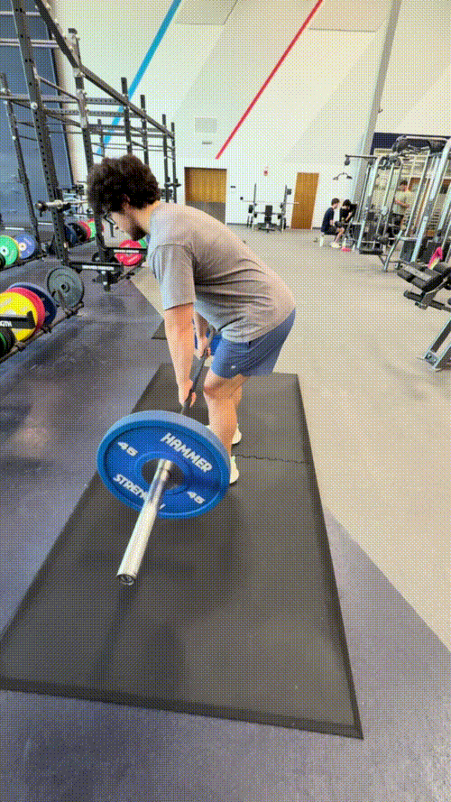

Bent-Over Row


How to Perform
Stand with your feet about shoulder-width apart and hold the barbell with a firm grip. Hinge at your hips while keeping your back neutral and your knees slightly bent.
Pull the barbell toward your lower chest or upper abdomen by driving your elbows backward. Squeeze your back at the top of the movement, then lower the barbell under control.
Primary Muscles
Latissimus dorsi (Lats)
Secondary Muscles
Rhomboid major (Rhomboids), trapezius (Traps), posterior deltoid (Rear Delt), and biceps brachii (Biceps)